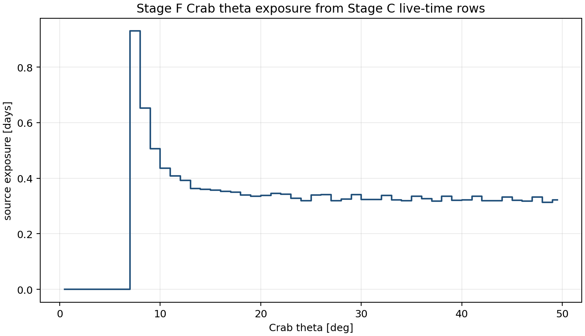
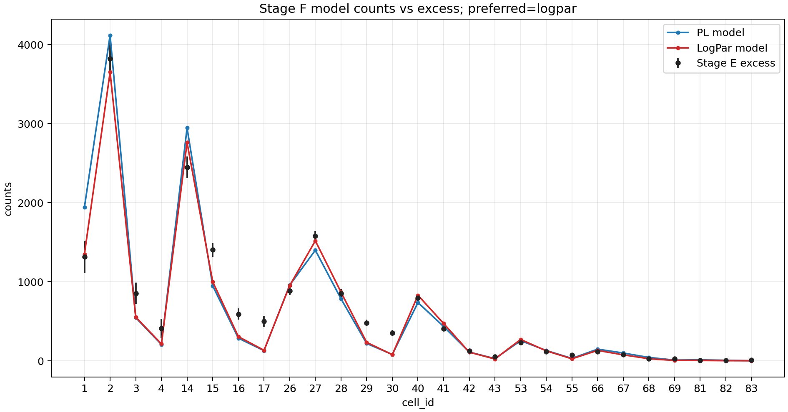
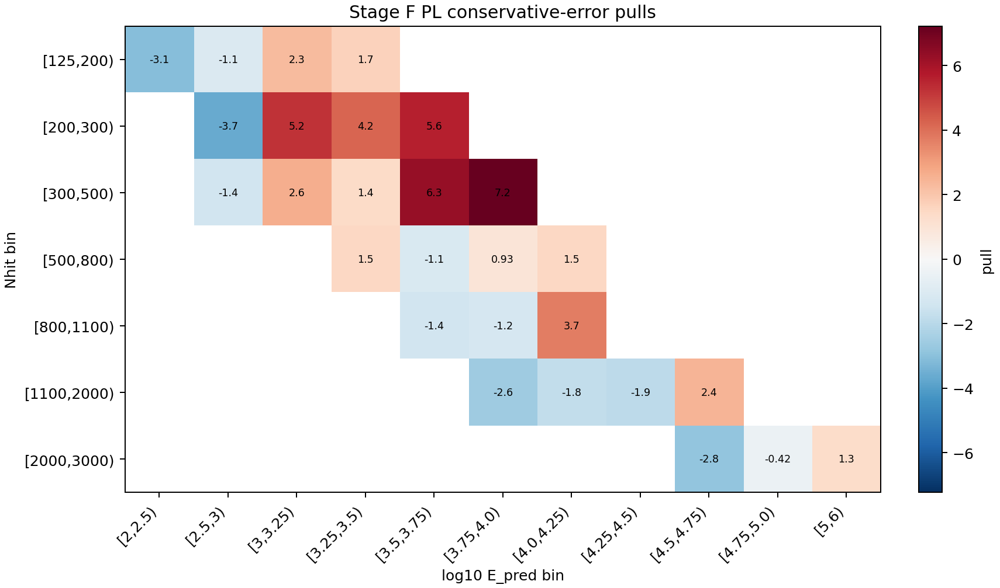
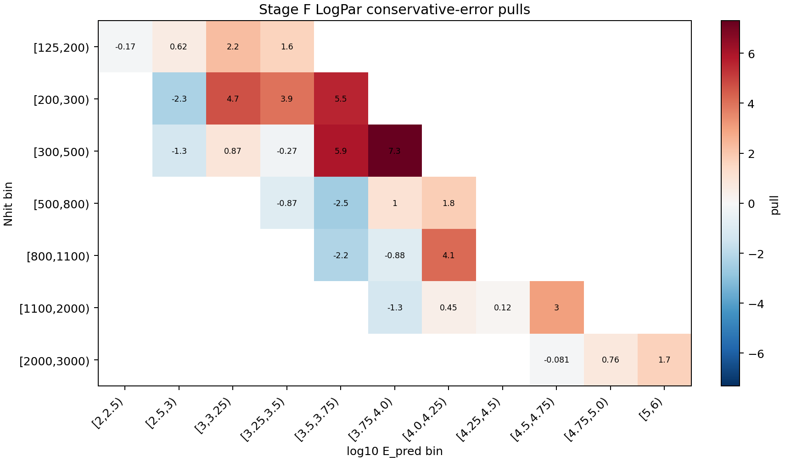

Stage F 前向折叠拟合报告
本页记录当前 Stage F 的目的、输入、方法和结果：把假设的 Crab 能谱通过 Stage A 二维响应折叠到观测 cell，与 Stage E 的逐 cell excess 做拟合对比。当前报告使用 selector v3_baseline，作为进入 Stage G 的 diagnostic baseline。
结论摘要
保守误差口径下，当前首选模型是 logpar。Reference-count preflight 状态为 passed，该 run 的状态是：可作为 Stage G diagnostic baseline。
v3_baseline12968.1，Stage E excess 为 17562.7，observed/expected = 1.35431。
为什么做 Stage F
Stage A 给出 MC 响应 A_eff(E_true, theta)，Stage E 给出观测侧每个 cell 的 N_on、背景期望 B_on 和 excess。Stage F 的作用是把二者接起来：不从 E_pred 反推真实能量，而是把一个物理能谱假设从真实能量空间前向折叠到观测 cell 空间，再和 Stage E excess 比较。
这一步有两个检查目标：第一，确认 Stage A 的绝对响应归一化和 Stage E 的信号量级在同一数量级；第二，为 Stage G 的 SED 点提供一个冻结谱形的全局拟合基准。
Stage F 做了什么
本 run 读取 Stage A 的二维响应和 Stage E 的逐 cell 信号表，按 Crab 在观测窗口内的天顶角曝光分布计算每个 cell 的预期信号数。拟合统计量是保守误差口径下的 chi-square：
chi2 = sum_b ((excess_b - N_exp,b) / sigma_b)^2
谱模型包括幂律 PL 和 LogPar。LogPar 只有在相对 PL 的 chi2 改善达到阈值时才作为首选；本 run 的改善量为 44.0129，因此保留 PL。
- Stage A response:
/mnt/mydisk/server/projects/energy_reconstruction/apply/output/stage_a_v3_candidate/response_2d_v3_candidate.npz - Stage E signal:
/mnt/mydisk/server/projects/energy_reconstruction/apply/output/stage_e_v3_candidate/runs/v3_stage_e_slurm_42024/signal_v3_candidate.npz - Cell subset:
/mnt/mydisk/server/projects/energy_reconstruction/apply/config/cell_selector_v3_baseline.csv
Cell subset 说明
Stage F 不在拟合中按 residual 自动删 cell；include/exclude 完全来自传入的 selector CSV。selector 中的排除原因会记录在 metadata，用于区分 frozen baseline、transition probe 和 diagnostics。
- Included cells:
1, 2, 3, 4, 14, 15, 16, 17, 26, 27, 28, 29, 30, 40, 41, 42, 43, 53, 54, 55, 66, 67, 68, 69, 81, 82, 83 - Excluded cells:
5, 6, 7, 8, 9, 10, 11, 12, 13, 18, 19, 20, 21, 22, 23, 24, 25, 31, 32, 33, 34, 35, 36, 37, 38, 39, 44, 45, 46, 47, 48, 49, 50, 51, 52, 56, 57, 58, 59, 60, 61, 62, 63, 64, 65, 70, 71, 72, 73, 74, 75, 76, 77, 78, 79, 80, 84
拟合参数
- PL:
phi0=2.817702e-12,gamma=2.65801, p-value5.9069e-42，chi2/ndof =264.96/25。 - LogPar:
phi0=3.178959e-12,alpha=2.73822,beta=0.120229, p-value8.7260e-34，chi2/ndof =220.95/24。
逐 cell 残差
| cell | Nhit bin | log10 E_pred bin | excess | err | PL model | PL pull | LogPar model | LogPar pull |
|---|---|---|---|---|---|---|---|---|
| 1 | [125,200) | [2,2.5) | 1315.14 | 203.11 | 1942.96 | -3.0911 | 1349.05 | -0.16698 |
| 2 | [125,200) | [2.5,3) | 3821.43 | 277.06 | 4117.87 | -1.0699 | 3650.77 | 0.61595 |
| 3 | [125,200) | [3,3.25) | 853.737 | 134.43 | 545.452 | 2.2933 | 552.247 | 2.2428 |
| 4 | [125,200) | [3.25,3.5) | 412.724 | 121.41 | 207 | 1.6944 | 214.135 | 1.6356 |
| 14 | [200,300) | [2.5,3) | 2446.95 | 136.28 | 2945.06 | -3.655 | 2760.72 | -2.3023 |
| 15 | [200,300) | [3,3.25) | 1402.76 | 86.667 | 948.026 | 5.2469 | 999.488 | 4.6531 |
| 16 | [200,300) | [3.25,3.5) | 591.37 | 72.42 | 286.455 | 4.2104 | 305.69 | 3.9448 |
| 17 | [200,300) | [3.5,3.75) | 499.915 | 66.197 | 128.533 | 5.6102 | 133.055 | 5.5419 |
| 26 | [300,500) | [2.5,3) | 884.429 | 52.76 | 957.746 | -1.3896 | 951.514 | -1.2715 |
| 27 | [300,500) | [3,3.25) | 1576.75 | 67.507 | 1398.78 | 2.6363 | 1518.33 | 0.8654 |
| 28 | [300,500) | [3.25,3.5) | 854.442 | 50.572 | 784.36 | 1.3858 | 868.145 | -0.27097 |
| 29 | [300,500) | [3.5,3.75) | 477.916 | 41.208 | 218.939 | 6.2847 | 233.262 | 5.9371 |
| 30 | [300,500) | [3.75,4.0) | 354.053 | 37.788 | 80.8055 | 7.231 | 77.7161 | 7.3128 |
| 40 | [500,800) | [3.25,3.5) | 794.912 | 38.924 | 736.972 | 1.4885 | 828.853 | -0.87197 |
| 41 | [500,800) | [3.5,3.75) | 404.504 | 26.711 | 433.851 | -1.0987 | 471.89 | -2.5228 |
| 42 | [500,800) | [3.75,4.0) | 128.165 | 18.65 | 110.843 | 0.92882 | 108.931 | 1.0313 |
| 43 | [500,800) | [4.0,4.25) | 53.8146 | 17.21 | 27.7274 | 1.5158 | 23.0927 | 1.7851 |
| 53 | [800,1100) | [3.5,3.75) | 229.54 | 18.179 | 255.107 | -1.4065 | 269.752 | -2.2121 |
| 54 | [800,1100) | [3.75,4.0) | 114.1 | 13.78 | 130.793 | -1.2113 | 126.204 | -0.87831 |
| 55 | [800,1100) | [4.0,4.25) | 73.6798 | 11.676 | 30.4846 | 3.6996 | 25.5534 | 4.122 |
| 66 | [1100,2000) | [3.75,4.0) | 116.251 | 12.073 | 147.544 | -2.592 | 131.611 | -1.2722 |
| 67 | [1100,2000) | [4.0,4.25) | 80.1093 | 10.29 | 98.6721 | -1.8039 | 75.5099 | 0.44697 |
| 68 | [1100,2000) | [4.25,4.5) | 27.7138 | 7.7644 | 42.5761 | -1.9142 | 26.8102 | 0.11638 |
| 69 | [1100,2000) | [4.5,4.75) | 28.8734 | 7.9452 | 9.4101 | 2.4497 | 4.8681 | 3.0214 |
| 81 | [2000,3000) | [4.5,4.75) | 4.26813 | 2.7806 | 12.1889 | -2.8486 | 4.49363 | -0.081096 |
| 82 | [2000,3000) | [4.75,5.0) | 4.97784 | 4.1258 | 6.71942 | -0.42212 | 1.85467 | 0.75699 |
| 83 | [2000,3000) | [5,6) | 10.2142 | 5.6379 | 2.62475 | 1.3461 | 0.649098 | 1.6966 |
结果图



